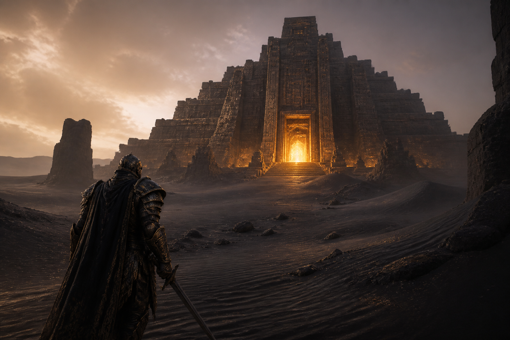
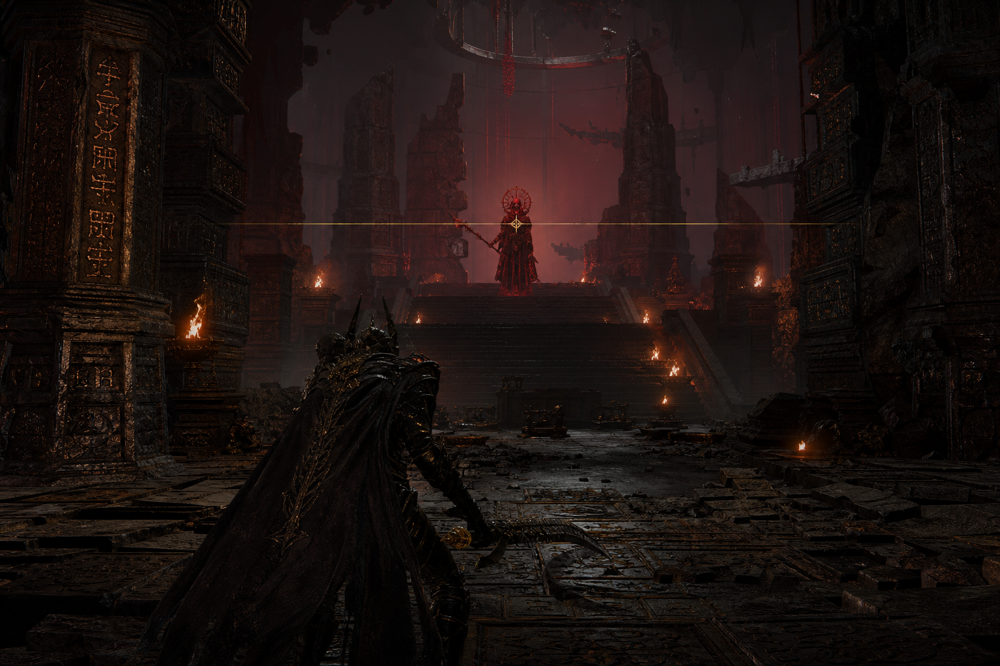

THE SHATTERED AGE
Live action
Live-action chronicle of the Great War: the demigod son who walked a burning world, and the lamp that would not stay a lamp.
Read the TestamentWorks
This house keeps a ledger of what it has made — pictures, games, and atlases that carry the Father’s world into mortal hours. It is a temple’s inventory, not a marketplace’s stall.
Live action
Live-action chronicle of the Great War: the demigod son who walked a burning world, and the lamp that would not stay a lamp.
Read the Testament
Video game
An action chronicle under the Usurper’s name — history on the title, never gold on this house’s masthead.
Enter the workThe work is named and kept. Public calendars of release belong to the makers’ other chambers, not to this altar.
Also kept
Mobile
Move. Weapons fire themselves. Survive the horde. Take the fragments from the Apostles of the Shattered.
Open the workArchive
An illuminated atlas of people, places, and the age that broke.
Open the archiveLive action
From the Order’s own chronicle: a prestige war picture in which the son walks, the lamp refuses to remain a lamp, and the Crimson Moon closes like a door.
The Shattered Age follows Noah John — demigod, the Father’s son, and a man — as he gathers five and crosses a world already burning. Gonduras falls in ash. Sakura is frozen at Allenbraze’s command. Saffrika’s green is razed. The Usurper, once appointed to guide the dead, reaches for a Nexus of his own to finish the Deep.
This is not a parade of gods. It is the story of a vessel who will not sit on the gold. In the frame, gold is light, never paint. The Crimson Moon stays small and far until the story can no longer keep it distant. The descent is one continuous path: temple, terrace, ruin, jail.
The company is named below. Dates of public release are announced by the makers in their own hours; this page keeps the work’s meaning, not a ticket counter. Read the Testament · The War
The company
The faces chosen to carry these offices on screen — named here with their craft records, not as merchandise.
Blevins · the Usurper
The lamp that would be the sun. Never the chrome of this house.
Portrait likenesses drawn from public commons. Andrew Koji, as Nasuke Giro, is named in the company without a still kept on this page — craft record. This temple does not keep a box office.
Video game
You do not play the Father. You walk the wound he left.
An action chronicle of the Shattering's long shadow. Dash the terraces. Face the Apostles. The Crimson Moon is a jail you can see and cannot enter clean. The Usurper's name is on the work. It is never this house's masthead.
The Shattered is the handheld sister. This is the long work.


The Apostles faced in play are named and shown in full on the War chronicle.
“A temple you can fail in. Gold as light, not loot. I have not wanted a jail this badly.” The Coil · advance word
“The Apostles are not bosses so much as wrong answers that learned to walk.” Northreach Play · first look
“It let me be Ryan of the plains for an hour and then took the throne away. Correct.” Sandria Evening · closed session